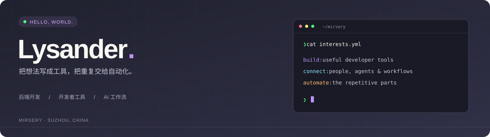

个人博客 · 全部项目 · 联系我
你好，我是 Lysander / mirsery，来自苏州。
关注后端开发、实时通信与开发者工具，也在探索 AI 编程和飞书工作流。喜欢把日常遇到的问题，变成用起来顺手的小工具。
基于上游项目持续迭代的个人 fork，将飞书消息连接到本地 Claude Code / Codex，支持流式卡片和独立会话。
TypeScript 飞书 AI 工作流
TypeScript
飞书
AI 工作流
开箱即用的 WebSocket 工具，让连接和消息调试更方便。
Java WebSocket 调试工具
Java
WebSocket
调试工具
每天进步一点点，记录技术学习与实践。
博客 笔记 持续学习
博客
笔记
持续学习
个人主题项目，以及 SnippetsLab、CodeRunner 的 Dracula 配色探索。
Dracula 开发体验 主题
Dracula
开发体验
主题
Python
JavaScript
HTML / CSS
MySQL
飞书集成
AI 编程
贡献记录见主页下方的 GitHub 原生贡献图。
浏览项目 · 我的收藏
保持好奇，持续构建。 · mirsery.github.io